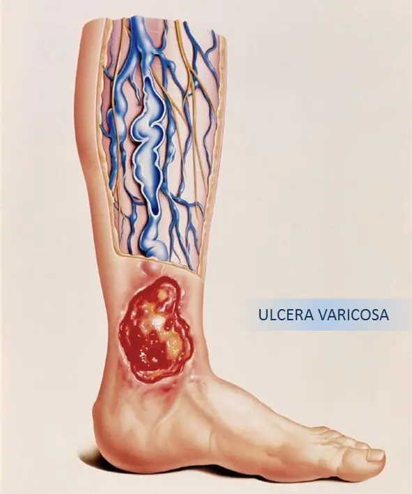
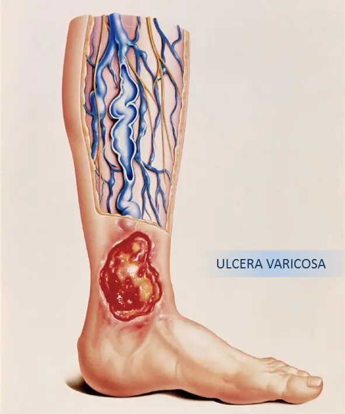

Lesão Venosa
O que é?
É um tipo de ferida crônica que surge principalmente na região das pernas, com ênfase nos tornozelos. Acarreta em insuficiência do fluxo sanguíneo, gerando acúmulo de sangue e até mesmo o rompimento das veias; surgem aí feridas dolorosas e que não cicatrizam.
Características físicas:
-
Bordas irregulares e superficiais;
-
Com o tempo podem se tornar profundas e bem definidas;
Sintomas:
-
Feridas que não cicatrizam;
-
Inchaços na perna;
-
Escurecimento da pele;
-
Enorme desconforto;
-
Pode gerar incapacidades;
-
Edema;
-
Descamações;
-
Varizes;
-
Coceira;
Público alvo:
-
Frequente em idosos;
-
Pessoas que possuem problemas sistêmicos;
-
Veias varicosas;
-
Quadros anteriores de trombose venosa profunda na perna
afetada;
-
Fratura, trauma ou cirurgia anterior;
Formas de tratamento:
-
Uso de meias compressivas;
-
Pomadas que auxiliam na cicatrização;
-
Evitar infecções;
-
Realizar limpeza e higienização;
 
